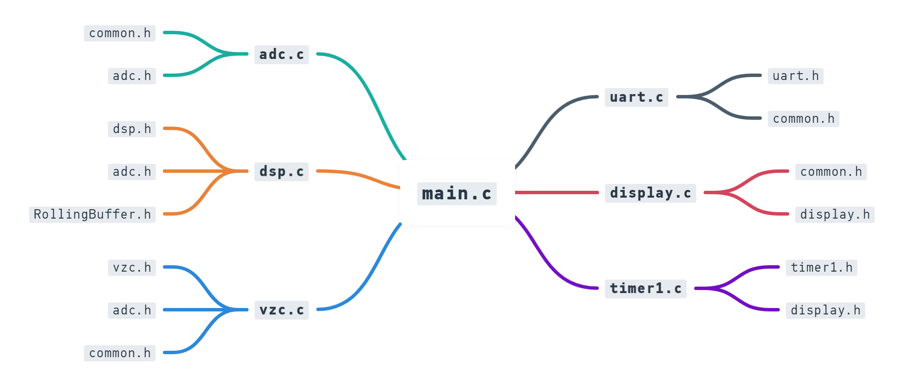
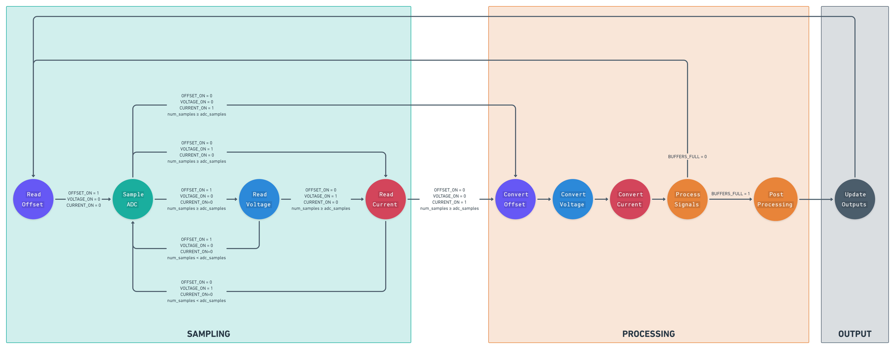
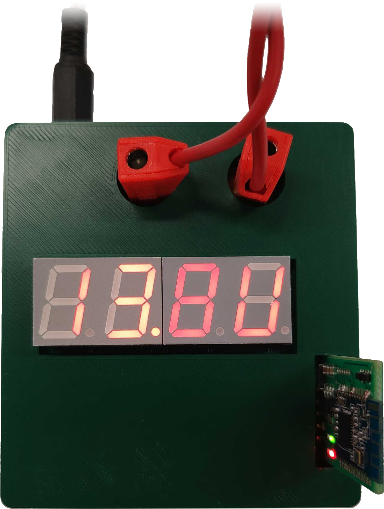
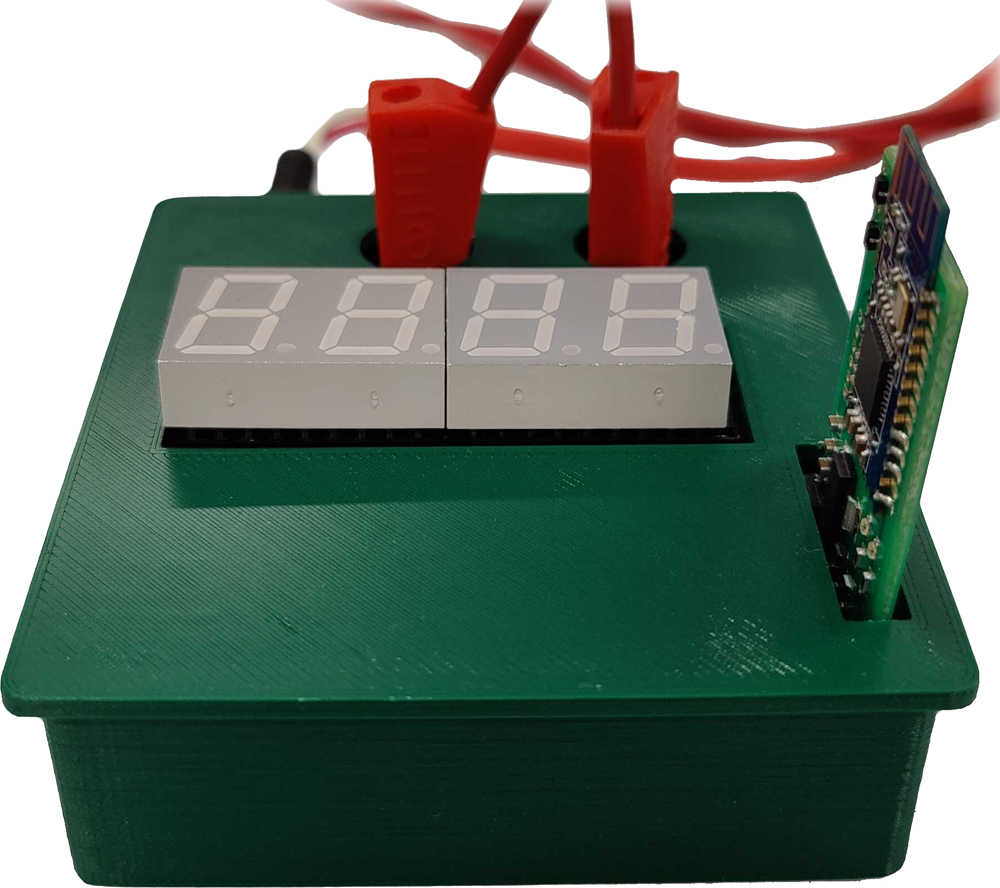

class: title-slide count: false .logo-title[] # Smart Energy Monitor ### Team 01 .TitleAuthor[James Bao, Dylan Chamberlain, Ammaar Marzook, and Rishi Shukla] --- layout: true name: template_slide .logo-slide[] .footer[[James Bao](https://www.linkedin.com/in/jamesnzl), [Dylan Chamberlain](https://www.linkedin.com/in/dylanchambo), [Ammaar Marzook](https://www.linkedin.com/in/ammaar-marzook-1b455b234), and [Rishi Shukla](https://www.linkedin.com/in/rishi-shukla-3896721b2), Department of Electrical, Computer, and Software Engineering (2022)] --- name: S1 # Project Goal üéØ To design and develop an energy monitor that may be used in a smart house to measure and display the amount of energy consumed by appliances. <br /> <br /> .center[] --- name: S2 # Implementation Overview .left-column[ - üîå Monitoring of real power consumption - üìè Precise measurements of voltage and current - üîÅ Firmware state machine to manage complexity - üîä Output over UART and Bluetooth<sup>®</sup> Low Energy - üì∫ Built-in 7-segment display - üíª Feature-rich and fully-responsive web application - üßë‚Äçüíº Industry-inspired project management - ✅ GitHub Issues & Pull Requests - üí¨ Slack - üìù Notion ] .right-column[<img src='img/Box.png' width='85%' />] --- name: S3 # Project Management (PI) .left-column[ - **Git & GitHub** - Version control, issue tracking, feature branches, and pull requests - Collaborative development and review ] .right-column[<img src='img/GitLog.gif' width='115%' style='margin-left: -15%;' />] --- name: S4 # Project Management (PII) - **Git & GitHub** - Version control, issue tracking, feature branches, and pull requests - Collaborative development and review .center[ ] --- name: S5 # Project Management (PIII) - **Slack** - Medium to discuss problems or schedule meetings, and consulting lecturers & TAs for support .center[] --- name: S6 # Project Management (PIV) - **Notion** - Consolidation of project documentation and meeting notes .center[] --- name: S7 # Hardware Implementation (PI) .left-column[ - **MATLAB Validation Script** - Implemented a script to validate hardware values - Performs a Monte Carlo-esque analysis across the entire project specification range using vectors and matrices .center[ ] ] .right-column[ ] --- name: S8 # Hardware Implementation (PII) - **Precision Current Shunt Resistor** - Procured a precision $100\,\text{m}\Omega \pm 1\%$ shunt resistor from Digi-Key<sup>®</sup> - Simplifies our board layout and reduces part count .center[] --- name: S9 # Hardware Implementation (PIII) .left-column[ - **Second Order Filter** - Second-order low-pass differential filters - Increased attenuation of high-frequency noise - Ensures a clean signal is provided to the ADC - **Phase-Preserved Filters** - Deliberately selected $RC$ filter values to apply same phase offset to both signals - Maximises accuracy as there is no net phase shift between voltage and current waveforms ] .right-column[ ] --- name: S10 # Hardware Implementation (PIV) .left-column[ - **Surface Mount Design** - An extra challenge to learn and experience - Mimic industry standards of PCB design - More compact and portable - **PCB Design Features** - Large copper pours to maximise power carrying capability - Separation of power ground and signal ground - Designed to fit in the palm of a hand ($62\,\text{mm}\times72\,\text{mm}$) - Logical layout - Separated functional blocks - Minimised trace lengths for noise resilience - Integrated 7-segment display ] .right-column[ ] --- name: S11 # Hardware Implementation (PV) .center[ <img src='img/PCB1.png' width='30%'> ] --- name: S12 # Hardware Implementation (PVI) .left-column[ - **On-Board Microcontroller** - Match industry practice - Design for manufacture (DFM) - More resilient to noise from shortest possible traces - Avoid costly development board - **BLE Module** - Communicate via serial terminal - Mobile phone - Smart Energy Challenge web application - Transmit UART output wirelessly - Receive calibrated gains ] .right-column[ ] --- name: S13 # Firmware Implementation (PI) - We wanted to ensure that our firmware was **elegant**, **efficient**, and **modular** .center[] --- name: S14 # Firmware Implementation (PII) - **State Machine** - Manage timings and simplify complexity .center[] --- name: S15 # Firmware Implementation (PIII) - **Free-Running ADC** - Maximise our sampling frequency - Non-integer multiple of signal frequency to capture more information - **Rolling Buffer** - Ergonomically take rolling averages of processed voltage, current, and power - Implemented as a circular/ring buffer to reuse same contiguous memory space - **ADC & Display Synchronisation** - Selected display refresh rate to roughly align with ADC sampling period --- name: S16 # Software Implementation - **Software Features** - Light and Dark Mode - Fully responsive, with a mobile-first design - **Monitor** - page plots all historical data saved in the database with new data as it is received in real-time - **Calibrate** - Quickly view and calibrate our sampled ADC waveforms, and our amplifier gains, with a user-friendly mode switcher. Check it out at [**https://cs209.jamesnzl.xyz**](https://cs209.jamesnzl.xyz) --- name: S17 .center[<img src='img/Software.png' width='100%' />] --- name: S18 # Hardware Enclosure - 3D printed enclosure for our Smart Energy Monitor - Protects both the board and the user - Gives a more polished aesthetic to blend into the environment .center[   ] --- name: S19 # Future Improvements .left-column[ - **Hardware** - Crystal on top of the board - DFM (design for manufacture) - Better BLE Module - BOM consolidation - **Firmware** - Calibrate gains - UART Rx - EEPROM - **Software** - Monitor fingerprinting/UUIDs - Graph usability - Filters and aggregate reporting ] .right-column[ <br /> <br /> <br /> ] --- class: title-slide layout: false count: false .logo-title[] # NgƒÅ mihi nui! #### üôè Thank you to Duleepa and all other COMPSYS 209 staff for their valuable time, advice, and feedback.